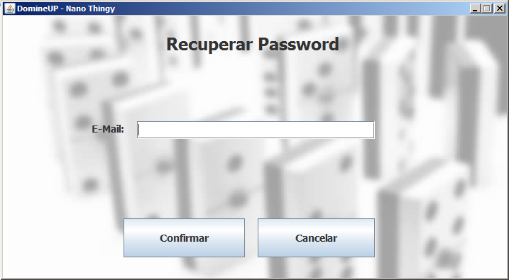

Apenas um utilizador registado pode recuperar a sua palavra chave. Para isso, o utilizador deve premir o botão "Recuperar Palavra Chave":
Surgirá, então, a seguinte janela, onde o utilizador registado terá que introduzir o seu e-mail:

Após a introdução do e-mail, a aplicação verifica se o e-mail se encontra registado e, caso essa verificação tenha sucesso, atribui uma nova palavra-chave ao utilizador conforme a seguinte imagem:
Na eventualidade da aplicação não reconhecer o e-mail introduzido, surge uma notificação a indicar um erro na recuperação da palavra chave: